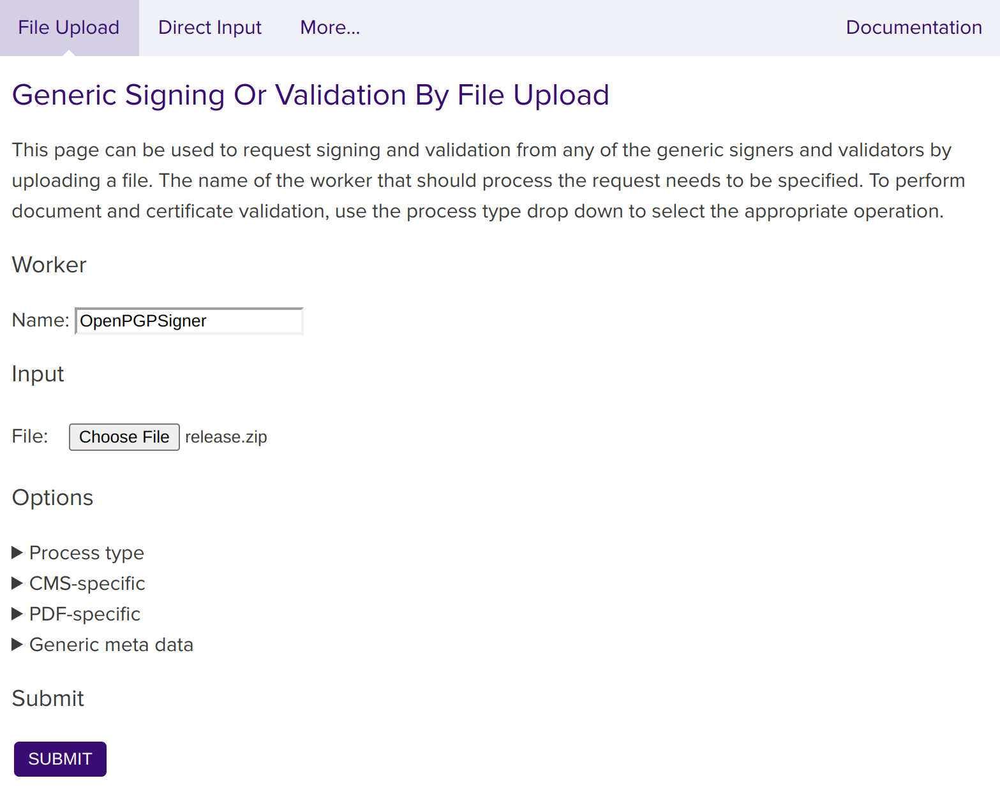

Sign with OpenPGP Signatures
SignServer supports OpenPGP and Debian package signing, allowing you to secure software release packages and repositories with code signing.
The OpenPGP Signer signs arbitrary data and produces an OpenPGP detached signature in binary or ASCII armored form, or a cleartext signature. For more information on the OpenPGP format, refer to RFC 4880.
In addition to PGP signing for Debian software repositories, the Debian Dpkg-sig Signer lets you sign individual Debian packages and adds the signature in the dpkg-sig format.
The OpenPGP Signer and Debian Dpkg-sig Signer use OpenPGP instead of X.509 certificates. The OpenPGP public key can instead be obtained from the Worker's status output. The Generate CSR functionality lets you add a user ID to the public key and store the result in the PGPPUBLICKEY Worker property.
When using PGP with AWS CloudHSM or another HSM that does not store PKCS#11 certificate objects, use the KEY_START_DATE.keyalias=YYYYMMDD Worker property with a fixed key creation date. For more information, see P11NG Crypto Token.
Prerequisite: OpenPGP Signer Configured
In the Set up OpenPGP Signer, follow the steps to configure the Signer, add User ID and certification, and generate a revocation certificate.
Sign a File
You can submit files for signing using the Client Web, the SignClient, or HTTP clients like cURL or wget.
Using Client Web
To upload a file and create a detached signature for it, perform these steps:
Go to the SignServer Client Web Generic page.
Scroll down to the Generic Signing Or Validation by File Upload section and specify
OpenPGPSignerin the Worker Name field.Click Choose File, select the file to create a detached signature for, such as
release.zip.
Click Submit.
Store the resulting signature file, for example,
release.zip.asc.
Using SignClient
Send a signing request using the SignServer SignClient:
bin/signclient signdocument -workername OpenPGPSigner -infile release.zip -outfile release.zip.ascWhere workername is the name of the Worker, infile is the path to the file to sign, and outfile is where the signature will be written to.
Using cURL
Replace http://localhost:8080/ with the address of your server or appliance:
curl -F "workerName=OpenPGPSigner" -F "file=@firmware.bin" \http://localhost:8080/signserver/process > firmware.sigThe following shows the HTTP traffic between the browser and the server, and the resulting signature file response:


Verify the Signature
You can verify the signature using any OpenPGP tool. This example uses the OpenPGP tool GnuPG.
If the public key for the Signer is not yet in your GnuPG keyring, import it first:
Save the public key (from the
PGPPUBLICKEYproperty) assigner001-pub.asc.Import the key:
$ gpg --import signer001-pub.ascThen verify the signature:
$ gpg --verify release.zip.asc release.zipRun the following to verify the signature using GnuPG:
$ gpg --verify release.zip.asc release.zip(Optional) Distribute the Public Key
The OpenPGP public key can be published to online key servers or distributed to clients by other means.